Thailand Skill Bridge
B0C690121: การพัฒนาระบบทดสอบแบบอัตโนมัติสำหรับ
แผงวงจรควบคุมด้วย LabVIEW, TestStand และ myRIO
August 7, 2569
Course outline
-
- Automated Test Equipment
- การเข้าจังหวะและส่งผ่านข้อมูลด้วย LabVIEW
- การสร้างสัญญาณทดสอบด้วย NI myRIO
- workshop: การเชื่อมต่อ DUT
-
- การเชื่อมต่อเครื่องมือวัด
- ไดรเวอร์ DAQmx และ VISA
- การวิเคราะห์/บันทึกข้อมูล
- workshop: การเชื่อมต่อและควบคุมเครื่องมือวัด
-
- NI TestStand
- Sequence และ action/test steps
- การใช้งาน code module
- workshop: การสร้าง sequence ทดสอบ
-
- กรณีศึกษาของการทดสอบในอุตสาหกรรม
- workshop: LabVIEW + TestStand for opamp testing
Workshop outcomes
- เข้าใจแนวคิดของ specification → แนวทางการทดสอบ → เครื่องมือในการทดสอบ
- เข้าใจ process model และการสร้างรายงานของ NI TestStand
- สร้าง Test Sequence สำหรับทดสอบ DUT (LM321 opamp)
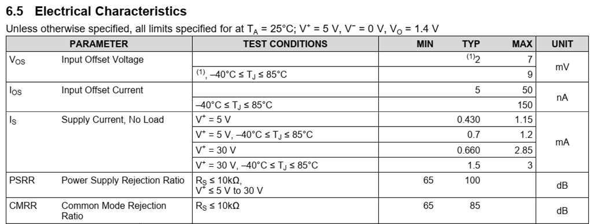
1. Opamp characterization
LM321 opamp
Single, 30-V, 1-MHz operational amplifier
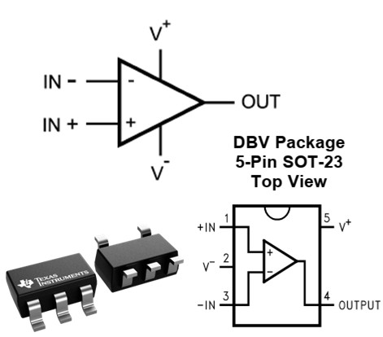
- Supply Voltage Range: 3 V to 32 V
- Gain-Bandwidth Product: 1 MHz
- Slew rate: 0.4 V/µs
- Supply Current: 430 µA
- Input Bias Current: 45 nA
- SOT-23 package: 2.90 mm x 1.60 mm
Opamp DC characteristics
Behavior of the op-amp with constant (zero or low frequency) input signals
- Result of mismatches between components inside the op amp
- Input Offset Voltage (\(V_{OS}\)):
input voltage that bring output to 0V (mid of ±V supply) - Input Bias Current (\(I_{B+}\) and \(I_{B-}\)):
DC currents that flow into inverting/non-inverting inputs - Input Offset Current (\(I_{OS}\)):
difference between the two input bias currents - Quiescent Current (\(I_Q\)):
Supply current drawn with no load condition
- Open-Loop Voltage Gain (\(A_{OL}\)):
DC differential voltage gain (very high value) without feedback - Common-Mode Rejection Ratio (CMRR):
ability to reject signals common to both inputs - Power Supply Rejection Ratio (PSRR):
ability to reject variations in power supply voltage - Output Voltage Swing (\(V_{OH}\) and \(V_{OL}\)):
Maximum positive and negative output voltages relative to the rails
Opamp AC characteristics
Behavior of the op-amp with time-varying (alternating) input signals
- Gain-Bandwidth Product (GBP):
product of closed-loop gain and bandwidth in the 20 dB/decade rolloff region - Unity-Gain Bandwidth:
frequency where open-loop gain drops to 1 (0 dB) - Full-power bandwidth (\(BW_{FP}\)):
Maximum frequency to deliver a full-amplitude undistorted sine wave - Gain margin (\(G_M\)) - Phase margin (\(\Phi_M\)): key measures of stability in op-amp feedback systems
- Slew Rate (SR):
maximum rate of change (V/µs) of the output voltage - Settling Time (\(t_S\)):
time required for the output to be within ab error band after step input - Voltage noise density:
spectral noise voltage per √Hz (nV/√Hz) - Total Harmonic Distortion (THD):
harmonic distortion introduced by the amplifier.
Opamp characterization
Servo-loop config: using auxiliary (integrator) op-amp to force the DUT’s differential input to zero → negate very high DC open-loop gains
- \(V_{OS}\) measurement
- \(I_B\) measurement
- DC gain measurement
- AC gain measurement
- DC CMRR measurement
- DC PSRR measurement
- AC CMRR measurement
- AC PSRR measurement
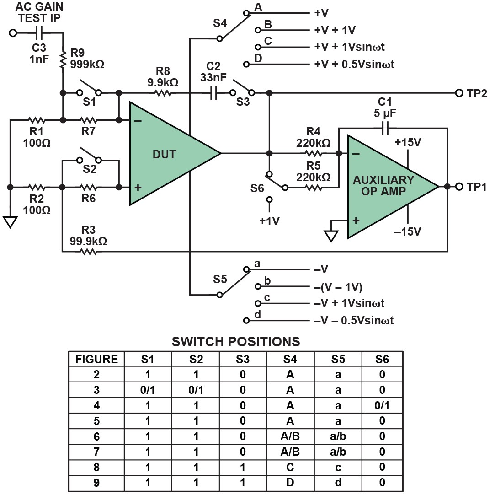
Offset voltage measurement
Offset voltage (VOS): small differential voltage that must be applied between the input terminals to make the output zero.
- Null feedback with attenuated TP1 (integrated \(V_{OS}\))
- Voltage TP1 เท่ากับ \(1000 * V_{OS}\)
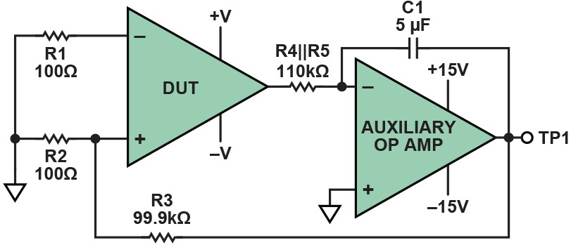
DC CMRR/PSRR measurement
Ability to reject signals common to both inputs (CMRR) and variations in power supply voltage (PSRR)
- CMRR: ±2.5V supply voltage → +3.5V/-1.5V
- PSRR: ±2.5V supply voltage → ±3V
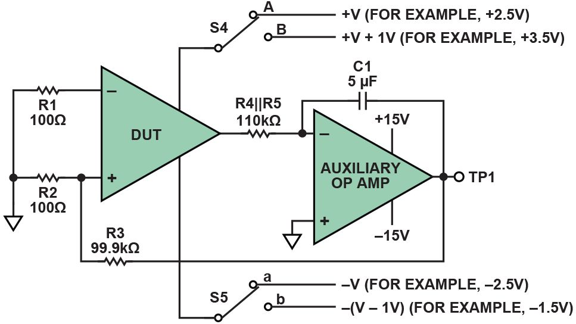
LM321 simulation
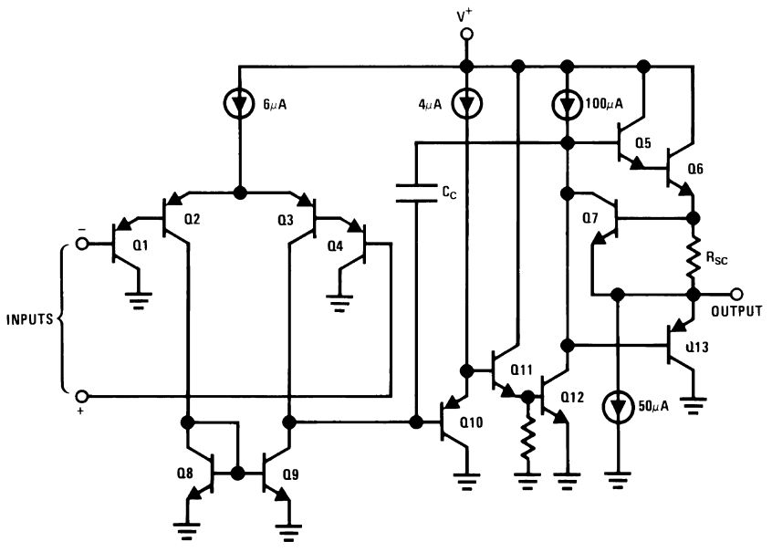
SPICE simulation
*LMV321 BICMOS Low Voltage General Purpose Op Amp
* MODEL FORMAT: PSPICE
* Rev: 11/07/97 -- ABG
*/////////////////////////////////////////
* Connections non-inverting input
* | inverting input
* | | positive power supply
* | | | negative power supply
* | | | | output
* | | | | |
.SUBCKT lMV321 3 2 4 5 6
EOX 120 10 31 32 2.0
RCX 120 121 1K
RDX 121 10 1K
RBX 120 122 1K
GOS 10 57 122 121 1.0
* Input Offset Voltage
.MODEL MRAX RES (TC1=1e-05)
FIN1 18 5 VTEMP 0.833333
FIN2 19 5 VTEMP 1.16667
* Input Bias Currents
CIN1 2 10 1e-12
CIN2 3 10 1e-12
* Slope of Supp. Curr. vs. Supp. Volt.
GPWR 4 5 26 10 0.00013
* Quiescent Supply Current
ETEMP 27 28 32 33 0.286906
RIB 32 33 MRIB 1K
* Temp. Co. of Input Currents
.MODEL MRIB RES (TC1=0.00283713)
* Output Voltage Swing Settings
GSOURCE 74 73 33 34 0.0006
GSINK 72 75 33 34 0.0016
* Output Current Settings
ROO 81 86 8.5
.MODEL DMOD1 D
.MODEL DMOD2 D (IS=1e-17)
.MODEL NPN1 NPN (BF=100 IS=1e-15)
.MODEL PNP1 PNP (BF=100 IS=1e-15)
.ENDS lmv321SPICE simulation: LTspice
Free SPICE simulator software, schematic capture and waveform viewer
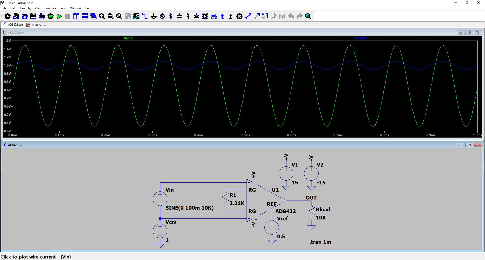
2. DIB ⇆ DUT
DIB connectors
cDAQ-9177 chassis
- NI-9239 วัดแรงดัน
- NI-9269 สร้างแรงดันทดสอบ
- NI-9477 ปิด/เปิด relay แนวสัญญาณ
Instruments
- UNI-T UT8805E วัดกระแส
- UNI-T UDP3305S แหล่งจ่ายไฟเลี้ยง
- PicoScope 2206B ทดสอบสัญญาณ > 1 kHz
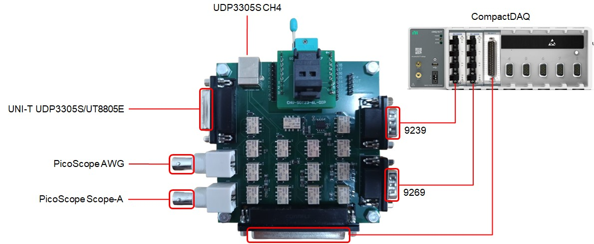
DIB switch matrix
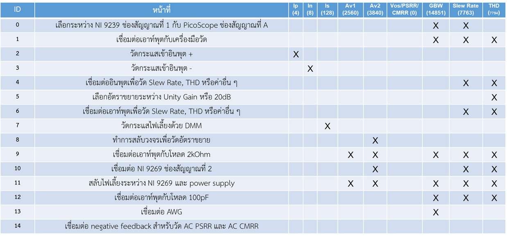
DUT socket
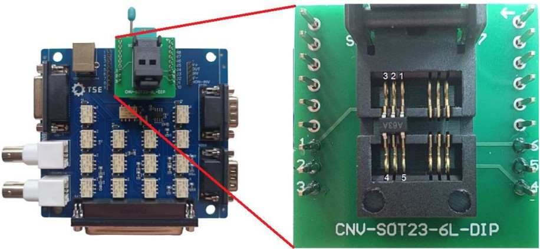
DUT interface
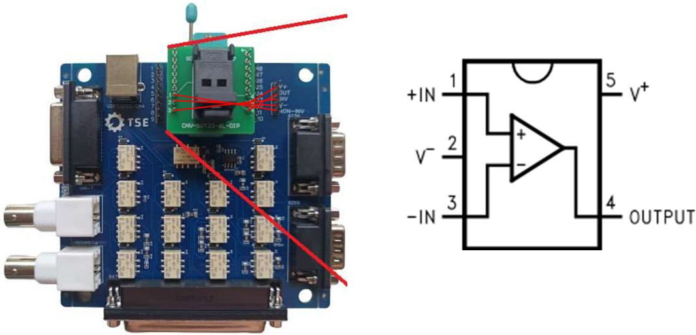
DUT characteristics: LM321
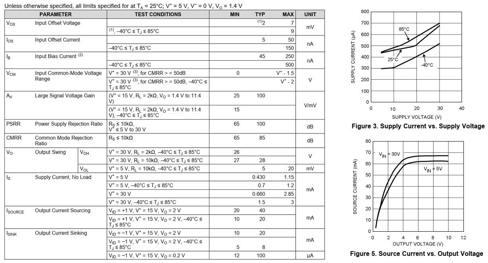
3. TestStand workshop
Running TestStand
Execution
Process model
- Sequential model (default): test one UUT at a time
- Batch model: run common steps for each batch, not for each UUT
- Parallel model: run multiple independent test sequences
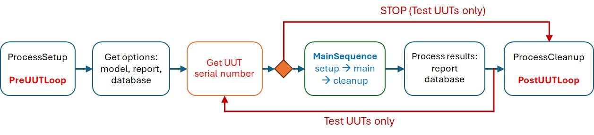
TestStand sequence callbacks
MainSequence: Setup → Main → Cleanup
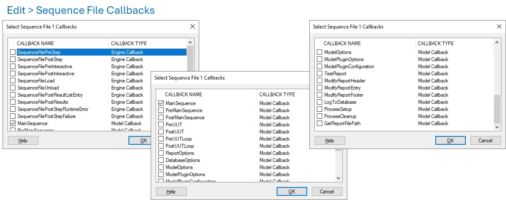
Test results and data logging
Process model → MainSequence (Test Steps) → Step results
Report
- HTML / XML
- Automatic generation
- Review test results
- Debug & traceability
Logging
- SQL database
- Manufacturing records
- Yield analysis
Data Streams
- CSV Input/Output
- Configuration
- Custom logging
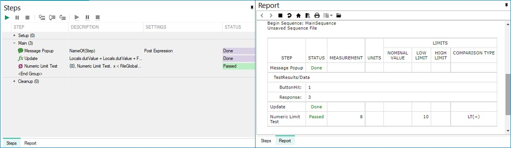
TestStand process tutorial
- เมนู Edit > Sequence File Callbacks เพิ่มตัวเลือก
ProcessSetup,ProcessCleanup,PreUUTและPostUUT - กำหนดตัวแปรสำหรับจัดการข้อมูลใน MainSequence
- FileGlobals:
SerialNumber(String),Offset(Number),Limit(Number) - Locals:
dutValue(Number)
- FileGlobals:
- กำหนด step สำหรับการทำงาน
| Callbacks | Operations |
|---|---|
ProcessSetup |
เพิ่ม Message Popup รับค่า FileGlobals.Offset |
PreUUT |
เพิ่ม Statement FileGlobals.SerialNumber = Parameters.UUT.SerialNumber |
- ใช้ breakpoint และ step over เพื่อตรวจสอบการรับค่า
TestStand process tutorial
- กำหนดตัวแปร Locals สำหรับการจัดการข้อมูลใน PreUUT
Locals.csvRef(Object Reference) และrowData(Container)- เพิ่มสมาชิก
SerialNumber(String) และLimit(Number) ให้ตัวแปรrowData
- กำหนด step ใน
PreUUTเพื่อนำเข้าค่า Limit
| Callbacks | Operations |
|---|---|
PreUUT |
เพิ่ม New CSV Input Stream เพื่ออ้างถึงไฟล์ CSV - ระบุตำแหน่งไฟล์ - กำหนด Input Record Stream Reference เป็น Locals.csvRef - กำหนด Field Mapping เป็น “0,1” |
| เพิ่ม Stream Loop สำหรับวนแยกข้อมูล - กำหนด Input Record Stream เป็น Locals.csvRef - กำหนด Input Record เป็น Locals.rowData |
|
| (Stream Loop) | เพิ่ม If-End ตรวจสอบเงื่อนไข FileGlobals.SerialNumber == Locals.rowData.SerialNumber |
| (If-End) | เพิ่ม Statement อัพเดทค่า Limit FileGlobals.Limit = Locals.rowData.Limit |
| เพิ่ม Break เพื่อจบ loop |
TestStand process tutorial
- กำหนด step ใน
MainSequenceเพื่อรับและตรวจสอบค่า Limit
| Callbacks | Operations |
|---|---|
MainSequence |
เพิ่ม Message Popup รับค่า Locals.dutValue |
เพิ่ม Statement คำนวณค่า dutValue Locals.dutValue = Locals.dutValue + FileGlobals.Offset |
|
| เพิ่ม Numeric Limit Test ทดสอบว่า dutValue < Limit - เมนู Config > Adaptors เลือกเป็น None - กำหนด Data Source เป็น Locals.dutValue - กำหนดเงื่อนไข LE (<) โดยตั้งค่าเป็น FileGlobals.Limit |
- ทดสอบป้อนค่าให้ครอบคลุม Pass/Fail
TestStand process tutorial
กำหนดตัวแปร Locals สำหรับการจัดการข้อมูลใน PostUUT
Locals.csvRef(Object Reference) และlogData(Container)- เพิ่มสมาชิก
idx(Number),SN(String) และStatus(String) ให้ตัวแปรlogData
กำหนด step ใน
PostUUTเพื่อบันทึกผลในไฟล์ CSV
| Callbacks | Operations |
|---|---|
PostUUT |
เพิ่ม New CSV Output Stream เพื่ออ้างถึงไฟล์ CSV - ระบุตำแหน่งไฟล์ - กำหนด Output Record Stream Reference เป็น Locals.csvRef - กำหนด Field Mapping เป็น “0,1,2” |
เพิ่ม Statement สำหรับเตรียมข้อมูล1 Locals.logData.index = Parameters.UUT.UUTLoopIndex, Locals.logData.SN = Parameters.UUT.SerialNumber, Locals.logData.status = Parameters.Result.Status |
|
| เพิ่ม Write Record เพื่อเขียนข้อมูล - กำหนด Output Record Stream เป็น Locals.csvRef - กำหนด Record เป็น Locals.rowData |
- ทดสอบป้อนค่าให้ครอบคลุม Pass/Fail
Test sequence for LM321 opamp
- เงื่อนไขการทดสอบ \(V_S\) = ±5V
- Supply current \(I_S\) < 1.2 mA
- Offset voltage \(V_{OS}\) < 9 mV
- PSRR > 65 dB

คอร์สอบรม BOC690121 ได้รับการสนับสนุนโดยโครงการ BOI STEM++ ปีงบประมาณ 2569